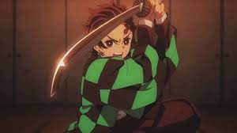
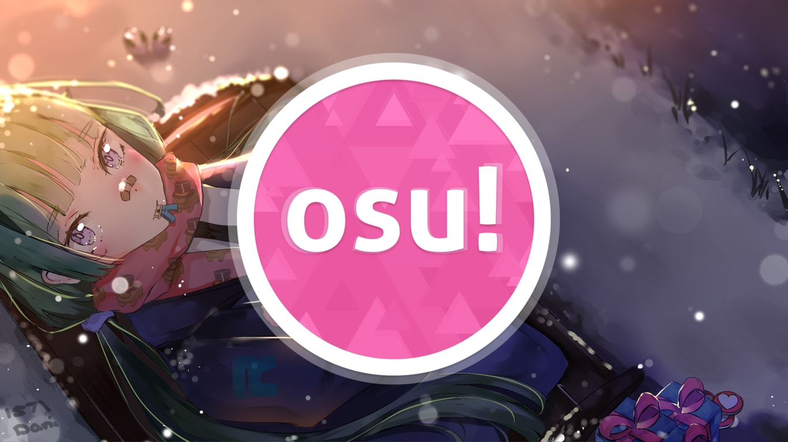
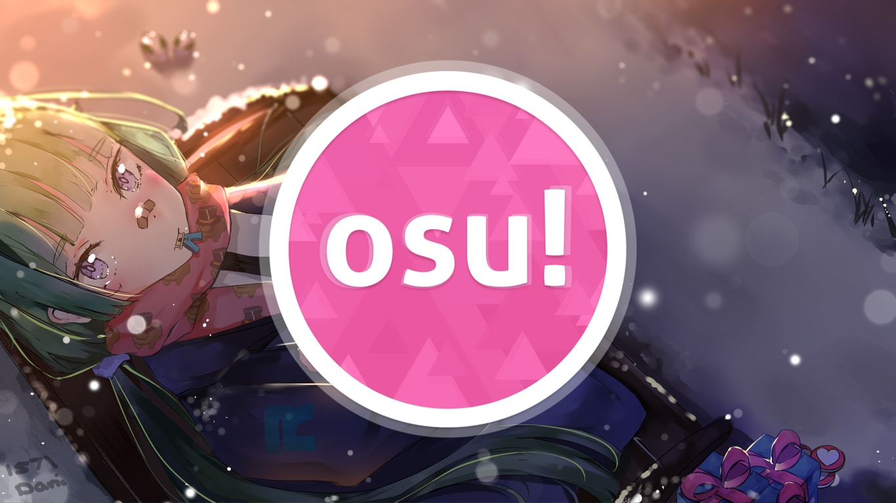
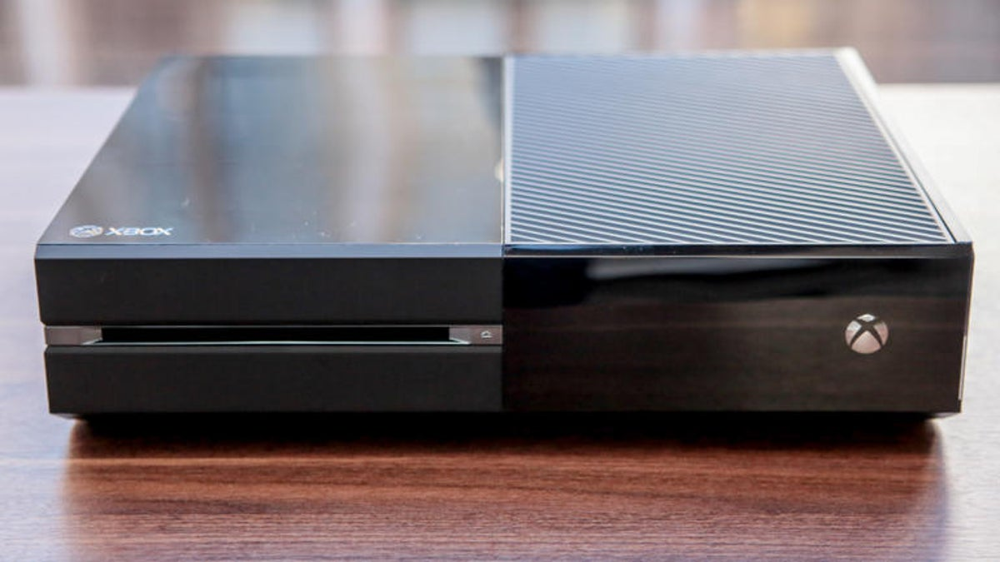

Who am I?
-
Hello, my name is Rehan. I am 12 and my birthday is on March 16th, 2009. I have been in Canada since 2013, when I first came to Canada I remember that it was close to my birthday and we got picked up by some relatives of ours. We stayed at their house until we got a house to live in, and like 12 days after we celebrated my birthday, and now I am a citizen here. My background is Bengali and I was born in Bangladesh. I remember spending time with my family in Bangladesh, we would all eat together and I would go to all my grandparents' houses, and the last time I visited there was this year in March. It was a few days after my birthday and I remember doing online school while I was there. I am a human like everyone else. I am Islamic and I have to pray and I can only eat halal food (slaughtered in a certain way) but I can’t eat pig.
I am learning French and going to school at Joseph Howe. I am in 7/8FE and I have made many friends in the class. I am doing French because my parents told me I should try to learn it. I am also learning French so it could help me understand more people in my life so if I get a job and I need to know French I will know, although I will stop French after grade 8. My name is pronounced ray-han, many people pronounce it wrong and it annoys me a bunch and I don't really like it. I explain more in my pet peeves section. I also have a little sister. I also live in a house in Toronto, ON. I would say that I like living in Toronto because we have access to many things and where I live I have many people that I have known for a while close to us, so if we needed anything very important we could go over to someone's house. Overall I would say that I am just a normal human being. Also I think that I will try my hardest this year. I want to have very high scores on my report card. I want to have high scores so I can impress my parents and it will give me a better chance to get into a better highschool, also it makes me feel accomplished when I get good marks..
My favourite colour is red and some other things about me are that I love playing games. A few hobbies I have are fishing, playing sports, playing games and sometimes sketching. I am not that good at sketching or anything but I would say I can draw well while looking at a tutorial sometimes. A few things I like to draw are anime characters and pokemon. My favourite anime character is Itachi Uchiha and my favourite pokemon is Rayquaza. Itachi is a character who had to kill his entire clan (except his little brother) for the village's sake. They were planning on taking over. His story is very sad and he even made his little brother want to kill itachi and in the end when they were fighting itachi held back and let his little brother kill him. Rayquaza is a dragon pokemon who is the strongest and it can use something called mega evolution that makes it stronger.
.svg.png)
Friends and Family
-
I have a Mom, Dad, and sister. My sister is 4 years old and she was born on July 29th, 2017. My sister is very funny and she says some funny things and makes weird noises when she hears things that she doesn’t know. My sister is also very silly and she does funny things like making up some weird stories sometimes. My sister goes to school and she likes to draw. She loves to play with me. We play with things like drawing and with her toys. Sometimes when we sleep we play a game where we pretend like characters and she makes very funny stories when we are playing that game. My mom is 39, and my dad is 42. My dad goes to work downtown, he works at a hotel in a restaurant. I kind of feel bad for him because he comes home very late. My mom is home right now but she used to go to work at Tim Hortons.
A very good friend of mine is Tazeem. I’ve known him ever since I was like 2 or 3. I see him a lot and we play FIFA 17 together. It’s pretty funny because he and I do very funny stuff while playing FIFA. We play at full speed sometimes and it is hilarious. It's super funny because our players go flying and they go all over the place and even the worst players can still score from very far, it makes it extremely funny. Overall he is a very good friend of mine.
At school, I have a bunch of friends. There are people like Seeming, Riza, Diviyan etc. I consider them my friends because we have fun together playing at lunch. Also if 1 of us needs something we usually help each other. Also, we understand when someone jokes so we don’t get offended. Also, a few characteristics of them that I like is because they are very understanding and they have a good sense of humour. We also enjoy the same types of games and things like that.
Alternatives
My 6 Word Story
Top 3 Anime Characters
My Bucket List
Favourites and Pet Peeves
-
I have many AMAZING FAVOURITES, one of my favourites is playing sports. I love playing sports like soccer and basketball. I am also playing a little bit of volleyball in gym class and I think it is fun. I think I like sports a lot because it keeps me active and it is fun, I get to enjoy it with my friends and sometimes we do silly things and it is funny.. A lot of my friends play sports. My favourite sport is soccer. I love soccer because I get to run a lot and you can sometimes make mistakes that turn out to be funny. One of my favourite things to do in soccer is crossing out people and soccer. It gives a different feel, It feels like I just won the world cup because everyone gets so hyped and it gives me chills.. I love playing sports with my friends because it is very amusing and I love scoring because it makes me feel super good. It is kind of like I just won the lottery and it was a big one. I think the reason it feels like this is because scoring causes you to win. Currently I don't play on any team but when I first discovered it it was amazing.
Another one of my favourites is playing video games. I play video games because they also help me pass my time and make friends. My favourite game is Minecraft. In Minecraft, I play a mini-game called Bedwars. In Bedwars you try to get another team’s bed. You can kill the other person but they will respawn if they have a bed. So if you want to eliminate them then you have to get their bed then kill them. There are limited modes that are different. But the main modes are solo which is 8 teams of 1, doubles which are 8 teams of 2, trios which are 4 teams of 3, and quads which are 4 teams of 4. I usually play solo. The reason I like playing Bedwars is because it just gives me chills and I feel amazing when I win a match, you can also do many funny things like trolling people which make me die of laughter. Also, the server that I play on is called Hypixel. There are also other servers in Minecraft. You can play survival where you have to get stuff to survive. It is also fun to build. Overall Minecraft is a game that you can play for hours and that is why I love playing Minecraft and has endless possibilities, this is why I love playing Minecraft.
This is one of my favorite things. I LOVE ANIME. I watch anime like Naruto, Attack On Titan, Death Note, Tokyo Revengers, etc. The reason I like anime is because a lot of them have such interesting story lines. For example, my favourite anime character is Itachi Uchiha from Naruto. He had to kill his entire family for the sake of his village because they were plotting against it. The reason he took the job instead of letting someone else kill them is because then he could at least save his little brother. Also he let himself take the blame and was called a bad person and didn’t say anything about it. It made my heart feel so bad and I was crying. Itachi also died fighting his brother and even let his brother win. After that I was so sad for about a week and I couldn't feel like doing anything. Another character in the same show is Jiraiya. He was the main character's Master and he was his godfather. But the main character didn't know. He died while fighting and he could have retreated but he stayed to gain intel so they could defeat him. When he was dying he was falling into the ocean and because of that one scene. I cried so much I just didn't feel like doing anything for a month and it felt like my heart was sinking deep into the ocean just like he was.
Sometimes when I am bored I like to play Roblox or Osu! Roblox is a platform where creators can create fun games with their platform for people to play. One game that I love to play on Roblox is Shindo Life. It is a game about Naruto and a few other anime where you have to spin to get special Bloodlines(powers). You can level them up to unlock special moves and modes and you can fight if you want. Osu is a game where you have to click on circles and aim to get points. For long clicks, you either have to hold down a button on your keyboard or you can physically click. It is a pretty hard game and I wouldn’t say that I am that good at it. I am still on easy levels for maps but if I try something harder I fail immediately. The way you fail is by missing a bunch of times and it will lower your bar (hp) and you can fill your bar up by hitting more circles but if it goes too low you lose. Also, it has a bunch of Japanese songs in the background and sometimes even videos while playing a level and it goes according to the beat most of the time, so if you listen to the song it could help out with winning the level. These are also some of my favourite games I play when I get bored of playing another game. That's all of the game's hobbies and favourites I have. I think you should check some of them out because you might like them :D
Pet peeves, things that you don't like and get annoyed. I have a bunch of them! A pet peeve I have is people mispronouncing my name. Sometimes it gets mispronounced so much that when I tell them how it is pronounced I say the wrong thing. This is one of my pet peeves because my name represents who I am and I want my name to stay like that. So all I want is to have my name properly pronounced. I feel like my heart beats louder and I get heavy breathing and it makes me extremely mad. I feel like ripping their mouth out and then telling them how to pronounce it even though I have told them 1 billion times! Also, I hate it when people step on my shoes. It is just annoying, and I feel like doing the same to them and showing them how it feels. That is just a few of my pet peeves but if i were to list all of them it would go on FOREVER.



 

School
-
The school I go to is Joseph Howe Senior Public School. This is a very cool school. There are so many people and it feels very alive. To me, this feels like a place where I can learn but not be bored at the same time. I have lots of friends at school and since there isn’t anyone bullying me because of race or anything I feel welcome. In fact all my schools made me feel welcome like this. In this school, I am in class 7/8FE and it is French extended. There are 24 people in my class. In class, we learn about lots of things like grammar, how to produce a paragraph, exponents, multiplication, etc. and I extremely like science because we get to do many interesting things. We get to do experiments and build stuff. For example we built a mini ecosystem from the things we found outside and it was very awesome to do with friends.
The teachers in my school are extremely friendly. My homeroom teacher is Mme. Fu and she doesn’t get mad if we joke around and she tends to joke with us. We also have many teachers that help us a lot like our math teacher, Mr. Lucasssen, who explains math concepts very clearly in a way that helps us understand and learn. Overall I would say that this is a great school because there isn't that much bullying and there are lots of nice kids here that you can make friends with.
Now I would like to talk about things that we learn in school. In school, we learn about French adjectives and how to utilize them so they make sense. In Math, we learn about LCM & GCF and how we can figure them out. We are also learning about powers and how to calculate them more easily. In Science, we are doing ecosystems where we will be able to build our own ecosystems and we have to keep them running. In Geography (which we learn in French), we are doing things about hurricanes. We have to watch videos and write the facts that we learned but this is also a way to test our listening skills, we learn those too, for example, re-watching videos and looking at images. Finally, last but not least we do physical Education. In the gym, we rotate sports pretty often but right now we are doing volleyball which may be one of my favourites because it is very fun. It is super fun because I like the way that it feels when we score. It feels like I just helped my team to win and I am so happy that I feel like screaming to the world and showing that I scored.
Images


Goals and Dreams
-
Do you know that most main characters in anime have goals and dreams that are extreme? I wouldn't say I have the most extreme goals but I do still have many goals and dreams. I have goals of going to cool places, getting a good education, and many more. A few goals and dreams I have are going to Japan, being a professional sports player, having a good job, being the best at a game, etc. I also want my family to succeed in their goals and dreams.
One of my goals is going to Japan. The reason I want to go to Japan is that I love their culture and everything they have there. They have so many cool cars and anime, and their food also looks tasty (if I can find a halal version). There are also many cool places and things to see in Japan. In Tokyo there are so many buildings and lights and the Tokyo Tower is also very cool because it is kind of like the CNTower, it is tall and lights up alot. I think of that as something very cool and awesome. There is also the SkyTree which looks very much like our CNTower but it looks so interesting and I want to go up it. There is also Mount Fuji where I want to go a lot. I want to see the cherry blossoms in Japan because they are so beautiful and there is also so much cool plantlife right under Mount Fuji. I started wanting to visit Japan ever since I learned that some of my favourite cars are made there. I also learned about all the cool places and I loved their pop culture and food. Overall Japan is an amazing place and I want to visit Japan a lot.
Another big dream of mine is to become a professional sports player, mostly a soccer player. I want this to be a big dream of mine because I want to do something I love to do. It isn’t a bad job either and it pays a lot. It is also very fun to have teammates that I can trust and have fun with. A big dream is to win a very hard-to-win trophy like the Champions League. I want to be able to enjoy my job. If I ever have a family I want to be able to be a fun Dad and spend my time with them.
One more dream of mine is to be the best in a game. I want to be the best Bedwars player. I would love to do this and it would be so much fun to be able to win all my games. It would be such a cool thing to show my friends and I could also win money sometimes if I go into a tournament. Anyways that would be such a cool thing and if I did something like that my heart rate would probably go up to 150bpm. It would make me feel AMAZING. These are things that would create great memories. So now I will talk about my memories.

Memories
-

I have many memories from the 12 years I lived. I’ve had scary experiences, fun ones, exciting ones and many more things. One amazing experience that might be one of my favourites is coming to Canada. I still remember coming on March 4th and getting picked up by my relatives. It felt so amazing coming to a new country and experiencing amazing things like the amount of people, also the way that everyone was moving. It was very organized and it felt way different from back in Bangladesh . I was only 3 but I was going to turn 4 in 12 days. But the first few weeks I stayed at our relatives home and this was in 2013. The first thing that felt different was the weather and the fact that there was snow!!! When I went outside I remember I got hit with this nice breeze and the snow landed on my nose. It felt so cold but then it melted and became warm. I got out of the airport and another thing that was different was the different types of cars. I remember just looking at cars that I didn't see in Kenya and Bangladesh. This is one of the greatest experiences I had, which led right into my next memory.
My first birthday in Canada. Do you know what it feels like to have a birthday when you are four? I had that experience TIMES 100. It was my first birthday in Canada 12 days after I came here. I was obsessed with cars and the movie too. I remember my cake having this Lightning McQueen toy. I was so excited that my heart beat might have gone up to 100 bpm. It was so fun spending time with my family. It was so amazing and flattering. I remember with my older relatives and we had so many memories. When we went to their house they had an Xbox and I loved playing on it. This was so enjoyable because we got to play games that I never really got to play before.
Another EXCITING memory was getting my first console. I had gotten a Xbox One for my birthday and I was so EXCITED. I always loved playing on that console and I could play on my own now. One of the first games I played was Minecraft Xbox One Edition. It was so amazing. I could finally feel that experience on my OWN console. I think one thing that made it so amazing was the fact that I could play games. I never really got to play games before and when I started playing I met many friends. It felt so cool to be able to play a game on a controller with other people. That is what made it so amazing.
Again I had another console. A Nintendo 3DS. It was a Deluxe Mario Edition. I played a Mario game on it and a Pokemon game on it. It was Pokemon X and it was one of the things that got me into pokemon. It was AWESOME. I could finally have a console that I could use anywhere. I also watched a lot of youtube videos on it. I remember watching danTDM playing Pixelmon which was Pokemon for Minecraft. I also remember bringing it to other people's houses. But sadly, it broke and the screen became disconnected. It worked for a week but then it completely went black and I had to throw it out :( Well that was many of my memories. I think people should really look back on memories. What do you think?